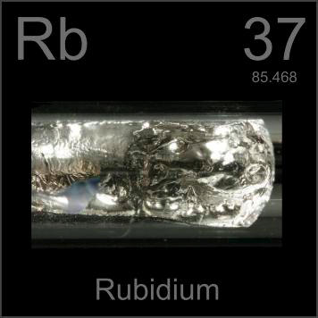

HOME
PREVIOUS
NEXT

Rubidium
Atomic Weight: 85.4678
Density: 1.532 g/cm3
Melting Point: 39.31 °C
Boiling Point: 688 °C
This ampoule contains a gram of highly reactive rubidium metal. Broken open it would catch fire rapidly. Rubidium is commonly used in cheaper atomic clocks (the most accurate ones use cesium).